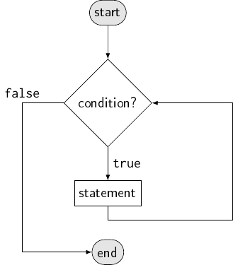

Control flow¶
Until now, the “paths” that the execution of our programs took have been quite simple: It started with the first statement, went on with the second, and so on, executing one statement after the other, each exactly once and after the last statement, the program ends.
A flowchart diagram for successive statements.
It turns out that this is not enough for all but the most trivial programs. What is needed are special statements that influence this control flow.
Conditional execution: if and else¶
if¶
The simplest control flow statement is if. The syntax is:
if (boolean_expression)
statement
This executes the given statement only if boolean_expression evaluates
to true.
A flowchart for if.
The following program demonstrates that:
#include <iostream>
int main()
{
double dividend;
std::cout << "Enter dividend: ";
std::cin >> dividend;
double divisor;
std::cout << "Enter divisor: ";
std::cin >> divisor;
if (divisor != 0)
std::cout << "Result: " << dividend / divisor << "\n";
std::cout << "Good bye!\n";
}
Warning
Do not write a semicolon ; between the closing parenthesis and
the statement. It would make the if control an empty statement and the
next “real” statement would be executed unconditionally.
Example output with dividend 3 and divisor 4 (note that the statement printing the divisions result is executed):
Enter dividend: 3
Enter divisor: 4
Result: 0.75
Good bye!
Example output with dividend 3 and divisor 0 (note that the statement printing the division is skipped):
Enter dividend: 3
Enter divisor: 0
Good bye!
You have probably noted that I indented the statement that is conditionally executed. The compiler ignores this, but it is the usual convention to indent the contents of a control-flow statement, just like you indent the contents of the main program.
else¶
An obvious missing “feature” of the above program is the output of an error message, when the divisor is zero. You could do that like this (only relevant part of the main program shown):
if (divisor != 0)
std::cout << "Result: " << dividend / divisor << "\n";
if (divisor == 0)
std::cout << "E: Cannot compute result: Divisor is zero.\n";
But this is not an ideal solution: First, the condition has to be written twice
(once “normal” and once logically inversed), and secondly the condition is also
checked twice at runtime. You could workaround this, by storing the result of
the normal condition in a Boolean variable and using the ! operator for the
inversed condition, but C++ already has a keyword that does the equivalent for
you: else. Using this, the above snippet could be rewritten as:
if (divisor != 0)
std::cout << "Result: " << dividend / divisor << "\n";
else
std::cout << "E: Cannot compute result: Divisor is zero.\n";
This also has the advantage of being immediately clear to the reader: if the
condition is true, do this, else do that.
![[flowchart]
\node (before) [flowterm] {statement before \texttt{if}/\texttt{else}};
\node (cond) [flowbranch,right=of before] {condition?};
\node (stat) [flowop,right=of cond] {\texttt{if}'s statement};
\node (else stat) [flowop,below=of cond] {\texttt{else}'s statement};
\node (after) [flowterm,right=of stat]
{statement after \texttt{if}/\texttt{else}};
\path (before) edge (cond)
(cond) edge ["\texttt{true}"] (stat)
(cond) edge ["\texttt{false}"] (else stat)
(stat) edge (after);
\draw (else stat) -| (after);](../_images/tikz-a1c60baf2f3273252cd35f3f4a9c1e6ddd82b368.png)
A flowchart for if/else.
Block statements¶
In the previous program and snippets, there always has been only one statement
that was conditionally executed. Indeed, in C++ only the one next statement
after the if or else is influenced by it. However, most of the time, you
will have execute more statements conditionally. The way to do this is to use a
special kind of statement after if/else: a block statement. It has the
following syntax:
{
statement_1
statement_2
// ...
statement_n
}
That is, as many statements as you like (one or zero statements are also allowed), inside a pair of braces. Note that block statements are the only statements that are not terminated with a semicolon. Block statements have no special meaning on their own (apart from scope; we will come to this in the next section). For example, the following snippets are completely equivalent:
std::cout << "A";
{
std::cout << "very";
std::cout << "simple";
}
std::cout << "program.\n";
prints “A very simple program.”, just like the following:
std::cout << "A";
std::cout << "very";
std::cout << "simple";
std::cout << "program.\n";
The real use of block statements is after if, else and the other control
flow statements we will see later: since a block statement is just a single
(though composite) statement, using it as the one statement after the if (or
else or other control flow statement) allows to execute multiple statements
conditionally.
For example, the following program sorts two numbers that the user enters:
#include <iostream>
int main()
{
int a, b;
std::cout << "Enter two numbers: ";
std::cin >> a >> b;
if (a > b) {
auto original_a = a;
a = b;
b = original_a;
} else {
std::cout << "Numbers already sorted.\n";
}
std::cout << "Smaller number: " << a << '\n';
std::cout << "Bigger number: " << b << '\n';
}
Example output with input “1 2”:
Enter two numbers: 1 2
Numbers already sorted.
Smaller number: 1
Bigger number: 2
and with “2 1”:
Enter two numbers: 2 1
Smaller number: 1
Bigger number: 2
There are mainly two things to note about this program (apart from the fact that
it uses a block statement, but this should be obvious): The placement of the
braces and the else and the statements inside the if.
Brace style¶
I placed the first opening brace on the same line as the if keyword and the
closing brace at a new line, at the same indentation level (i.e. with the
same indentation) as the corresponding if. The else directly follows the
brace that closes the block of the if to which it belongs. I also put the
std::cout << "Numbers already sorted"; inside a block statement, although
there would be no need for it; I just prefer to have the parts that belong to
the same if either all in blocks or all without blocks. The braces of the
else statement follow the same principle as the if‘s: opening one
directly after the else, closing one with the same indentation as the
line of the else keyword. The closing brace is on a line of its own because
the next statement is not part of the if/else.
There are other ways to do this. In a common one, the if/else would look
like this:
if (a > b)
{
auto original_a = a;
a = b;
b = original_a;
}
else
{
std::cout << "Numbers already sorted.\n";
}
This style puts every brace on a line of its own. It has the advantage of making the control flow statements even more visible. It does, however, need three lines more in this example, which I personally think makes the code look so “stretched” that it hinders my flow of reading.
There are other styles of brace formatting and indentation in general. You can read about them e.g. in Wikipedia.
Swapping¶
The other interesting part of the program are the statements inside the if:
auto original_a = a;
a = b;
b = original_a;
This has the effect of swapping a and b and is probably the simplest
well known “algorithm”. First, a is copied into the new variable
original_a, then b is assigned to a and finally b gets the value
that a had before b was assigned to it. This might seem needlessly
complicated at first look, but consider what the naïve variant would do:
a = b;
b = a;
First a gets assigned the value of b. Then b gets assigned the value
of a — but wait! What value does a have at this point? It was already
assigned from b and its original value was overwritten and is now lost.
Why do we want to swap a and b here in the first place? Because the two
numbers are either already sorted (then we do nothing) or they are not sorted,
in which case they must be in completely reverse order (because there are only
two numbers) and swapping them reverses the order again, thus establishing the
right (sorted from smallest to largest) order. Of course, sorting more than just
two numbers is more involved than that, but many algorithms that do it still use
the swapping of two numbers as a fundamental operation.
Scope¶
If you play with the sorting program above, you might notice that you cant’t
access the original_a variable outside the block in which it is defined,
i.e. inside or after the else block.
Apart from type, value and associated memory, a variable also has a
scope. The scope is the area of the source code in which the variable can
be referred to. It starts at its definition and ends where the (innermost)
block in which it was declared ends. Thus the scope of original_a extends
only to the end of the if‘s block statement, but not outside it. If you
wanted to use the variable after the if you would have to define it outside
the block:
auto original_a = a; // Point of definition for original_a.
if (a > b) {
// original_a can be used here
} else {
// and here
}
// and also here
However, since in this example we don’t need original_a outside the if,
it’s best to leave its definition were it was: In general you should always
make the scope of a variable as small as possible and as big necessary.
Task: Sorting three numbers
Extend the program that sorts two numbers to sort three numbers instead!
Hint: Check your program with all 6 permutations (i.e. possible orders) of 1, 2, 3.
(Solution)
Nested control flow and else if¶
Like you can write arbitrarily complex expressions, you can also write arbitrarily complex control flow structures. The following program demonstrates that:
#include <iostream>
int main()
{
int age; // Age in years
std::cout << "How old are you? ";
std::cin >> age;
if (age < 16) {
int height; // Height in centimetre
std::cout << "How tall are you? ";
std::cin >> height;
if (height < 160)
std::cout << "Sorry, you are not tall enough.\n";
else
std::cout << "You are tall enough to take a ride!\n";
} else {
std::cout << "You are old enough to take a ride!\n;";
}
}
Try the program out yourself! Make sure you see all four possible outputs.
Note that it does not directly play a role if blocks are used or not. For example, the following does what one would expect (and what the indentation suggests):
if (x >= 0)
if (x <= 100)
std::cout << "x is between 0 and 100.\n";
The outer if applies to the one next statement, which is the inner if.
This inner if, however, applies to the cout expression, so that from the
outer if‘s point of view, if (x <= 100) std::cout << … is just one
statement.
In this case, the nesting does not really make sense: the and-operator &&
could (and should) be used instead:
if (x >= 0 && x <= 100)
std::cout << "x is between 0 and 100\n";
The dangling else problem¶
You should be particularly careful with nested else. For example, consider
the following program:
#include <iostream>
int main()
{
int x;
std::cout << "Enter x: ";
std::cin >> x;
if (x >= 0)
if (x <= 100)
std::cout << "x is between 0 and 100.\n";
else
std::cout << "x is negative.\n";
}
Did you expect these outputs?
Enter x: 2
x is between 0 and 100.
Enter x: -5
Enter x: 101
x is negative.
If not, remember that the compiler does not care about indentation. For it, the
if/else part of the program could also have been written as
if (x >= 0)
if (x <= 100)
std::cout << "x is between 0 and 100.\n";
else
std::cout << "x is negative.\n";
How should the compiler know which else belongs to which if? This
problem is so common in imperative languages, that it has got its own name: the
dangling else problem. In C++ (and most other languages), there is a simple
rule: When there is an ambiguity, the else belongs to the nearest possible
if. Thus, the “correct” indentation of the code above (i.e. the indentation
that reflects its meaning) would be:
if (x >= 0)
if (x <= 100)
std::cout << "x is between 0 and 100.\n";
else
std::cout << "x is negative.\n";
That should explain the output. To give the code the originally intended
meaning, the inner if should be put in a block statement:
if (x >= 0) {
if (x <= 100)
std::cout << "x is between 0 and 100.\n";
} else {
std::cout << "x is negative.\n";
}
Alternatively, the following also means the same:
if (x >= 0)
if (x <= 100)
std::cout << "x is between 0 and 100.\n";
else {}
else
std::cout << "x is negative.\n";
By giving the inner if an empty else branch, the next else is forced
to the outer if. However, although technically correct, this is rather
obscure and I recommend just using block statements instead.
else if¶
There is, however a common use for nesting control flow statements without blocks. Look for example at the following program that determines, whether a number is positive, negative or zero:
#include <iostream>
int main()
{
int x;
std::cout << "Enter a number: ";
std::cin >> x;
if (x < 0)
std::cout << "x is negative. (-)\n";
else if (x > 0)
std::cout << "x is positive. (+)\n";
else
std::cout << "x is zero. (0)\n";
}
The else if is not a new statement: it’s just an if nested inside a
else. However, it is usually formatted like a single control flow statement
(also in the above). Using the technically correct indentation, the code would
look like:
if (x < 0)
std::cout << "x is negative. (-)\n";
else
if (x > 0)
std::cout << "x is positive. (+)\n";
else
std::cout << "x is zero. (0)\n";
![[flowchart]
\node (before) [flowterm] {start};
\node (negcond) [flowbranch,below=of before] {x < 0?};
\node (poscond) [flowbranch,below=of negcond] {x > 0?};
\node (zero) [flowop,below=of poscond]
{\verb|std::cout << "x is zero. (0)\n"|};
\node (neg) [flowop,right=of negcond]
{\verb|std::cout << "x is negative. (-)\n"|};
\node (pos) [flowop,right=of poscond]
{\verb|std::cout << "x is positive. (+)\n"|};
\node (after) [flowterm,below=of zero] {end};
\path (before) edge (negcond)
(negcond) edge ["\texttt{true}"] (neg)
(negcond) edge ["\texttt{false}"] (poscond)
(poscond) edge ["\texttt{true}"] (pos)
(poscond) edge ["\texttt{false}"] (zero)
(zero) edge (after);
\draw [name path=neg after] (neg.east) -- ++(3em,0) |- (after.east);
\path [name path=pos after] (pos.south) |- (after.east);
\draw [name intersections={of=neg after and pos after,by=x}]
(pos.south) -- (x);](../_images/tikz-5443daea1cb3c753544910efd47181ec432a0c9f.png)
A flowchart for the above snippet (equivalent to the corresponding part in the full program).
Note
Dont’t forget the ?: operator! In the example above, it could be
used to replace the if/else like this:
std::cout << (x < 0 ? "x is negative. (-)" :
x > 0 ? "x is positive. (+)" :
"x is zero. (0)")
<< '\n';
The ternary operator, however, can be used to select expressions only (and
also expressions of the same type only), while using if/else you can
execute whole different program parts. For example the sorting program could not be implemented using only ? :.
Multi-way branching: switch¶
The switch statement typically has the following syntax:
switch (integral_expression) {
case integral_constant_1:
statements_1
break;
case integral_constant_2:
statements_2
break;
case integral_constant_3:
statements_3
break;
// ...
default:
default_statements
break;
}
![[flowchart]
\node (before) [flowterm] {start};
\node (sw) [flowbranch,below=of before,align=center]
{\ttfamily switch\\ \ttfamily(integral\_expression)};
\node (c3) [flowop,below=5em of sw] {\verb|statements_3|};
\node (c2) [flowop,left=of c3] {\verb|statements_2|};
\node (c1) [flowop,left=of c2] {\verb|statements_1|};
\node (cx) [flowop,right=of c3] {\dots};
\node (def) [flowop,right=of cx] {\verb|default_statements|};
\node (after) [flowterm,below=of c3] {end};
\path (before) edge (sw)
(sw) edge ["\ttfamily const\_1:"'] (c1)
(sw) edge ["\ttfamily const\_2:"'] (c2)
(sw) edge ["\ttfamily const\_3:"'] (c3)
(sw) edge (cx)
(sw) edge ["\ttfamily default:"] (def)
(c1) edge (after)
(c2) edge (after)
(c3) edge (after)
(cx) edge (after)
(def) edge (after);](../_images/tikz-dee06eab2e81e40da8a8255583221ee0c73edb38.png)
A flowchart for the above switch.
Where integral_expression is an expression which evaluates to an integer
type and integral constants are integral expressions that can be evaluated at
compile time, e.g. simple integer literals or constants that are initialized
with them. Note that if you use variables for integral_expression, they must
be const; but not every const variable qualifies: They must, in turn,
also have been initialized from compile time evaluable expressions.
The above switch is a replacement for the following if … else if … else
sequence:
if (integral_expression == integral_constant_1)
statements_1
else if (integral_expression == integral_constant_2)
statements_2
else if (integral_expression == integral_constant_3)
statements_3
// ...
else
default_statements
Granted, the switch has more lines than the chained if/else, but it
does not repeat the == every time.
The default branch of the switch is optional; if you leave it out, it’s
like leaving out the else in the equivalent if/else: No statements
are executed if integral_expression is not equal to any of the
integral_constants.
The following program demonstrates switch (note that chars count as
integral):
#include <iostream>
int main()
{
double lhs, rhs;
std::cout << "Enter left-hand side operand: ";
std::cin >> lhs;
std::cout << "Enter right-hand side operand: ";
std::cin >> rhs;
char op;
std::cout << "Enter operator: ";
std::cin >> op;
double result = 0; // Initialize to avoid MSVC's warning C4701.
auto valid_op = true;
switch (op) {
case '+': result = lhs + rhs; break;
case '-': result = lhs - rhs; break;
case '*': result = lhs * rhs; break;
case '/': result = lhs / rhs; break;
default:
valid_op = false;
std::cout << "E: '" << op << "' is not a known operator.\n";
break;
}
if (valid_op)
std::cout << lhs << ' ' << op << ' ' << rhs << " = " << result << '\n';
}
Example output:
Enter left-hand side operand: 12
Enter right-hand side operand: 5
Enter operator: /
12 / 5 = 2.4
Warning
Don’t forget the break! If you leave it out, the contents of
the switch will continue to execute accross the cases and the
default (you fall through these labels), until it hits the next
break (or reaches the end). There are some rare occasions where this is
intended, which is why it’s not a compiler error. In such a case, you should
place a comment instead of the break, saying // fall through.
Of course, the break after the default statements is technically
unnecessary, but I added it for a consistent look.
Probably the most common application of “fall through” is to execute some
statements in multiple cases, by falling through after a case without its
own statement. For example we could additionally allow the dot “.” and an “x”
for multiplication by rewriting the switch as follows:
switch (op) {
case '+': result = lhs + rhs; break;
case '-': result = lhs - rhs; break;
case '*':
case 'x':
case '.': result = lhs * rhs; break;
case '/': result = lhs / rhs; break;
default:
valid_op = false;
std::cout << "E: '" << op << "' is not a known operator.\n";
break;
}
In this common case, the // fall through comment is usually left out,
because the absence of a statement is enough of a hint. I also chose to add in
additional empty lines, to make it clear what belongs together.
The simple truth about switch¶
A switch statement of the form
switch (integral_expression) {
case integral_constant_1:
statements_1
case integral_constant_2:
statements_2
case integral_constant_3:
statements_3
// ...
default:
default_statements
}
just jumps to the case label that matches the integral_expression
(default if no other one matches and after the switch if no default
is given) – nothing more; further case labels are ignored (but only the
labels not the statements after them, which are technically not “their
statements”). A break statement can be used to jump to the end of the
switch. By placing a break before each case except the first one,
the idiomatic usage of switch as a multi-way branching device is achieved.
Note that if you want to declare variables that are local to a “case-branch”, you need to use a block statement:
switch (x) {
// …
case some_constant: {
auto y = /* … */;
// …
} break;
// …
}
Of course, it does not matter whether the break is inside at the end of the
block or just after it; I just think it looks nicer in the above way.
Loops¶
While if/else and switch execute their “attached” statement(s)
either one or zero times, loops allow you to conditionally execute a statement
many times. Finally, you can let the computer do the repetition for you!
Repeat conditionally: while¶
The while loop has nearly the same syntax as if, only the keyword is
different:
while (boolean_expression) // Loop “head”.
statement // Loop “body”.
It executes statement as long as the loop condition boolean_expression
is true. boolean_expression is checked each time before executing
statement. That is, a while loop operates as follows:
- Evaluate
boolean_expression - If it evaluated to
false, end the loop (go after 4.) - Execute
statement - Go to 1.

A flowchart for while.
This means that if boolean_expression is already false at the point
where the while is first reached, statement will never be executed.
Play around with the following program!
#include <iostream>
int main()
{
int hit_points;
std::cout << "Enter the robot's initial hit points:";
std::cin >> hit_points;
while (hit_points > 0) {
int damage;
std::cout << "Enter the damage dealt: ";
std::cin >> damage;
hit_points -= damage;
std::cout << "Remaining hit points: " << hit_points << "\n";
}
std::cout << "The robot is destroyed.\n";
}
Note
Basically, that’s it for control flow! Using if and while you can
express every imaginable control flow. Theoretically, you would not even need
if, because you can express it using while:
if (something)
std::cout << "Something!\n";
could be written as
auto first_execution = true;
while (first_execution && something) {
first_execution = false;
std::cout << "Something!\n";
}
do … while¶
The syntax of the do … while loop is a bit weird, in the sense that it is
the only control flow statement that consists of two keywords and the only one
where a keyword is put after the statement:
do
statement
while (boolean_expression)
Semantically, the only difference between the do … while and the “ordinary”
while loop is that the former checks its condition every time after its
statement is executed, while the while loop does it beforehand. It operates
as follows:
- Execute
statement - Evaluate
boolean_expression - If it evaluated to
false, end the loop (go after 4.) - Go to 1.
A flowchart for do … while.
This means that, contrary to the while loop, a do … while loop always
executes its statement at least once, no matter if boolean_expression is
initially false. You won’t need do … while nearly as often as while,
but sometimes it can be handy.
The following program shows a menu to the user until he chooses to exit the
program. Such menus are typical candidates for do … while.
#include <iostream>
int main()
{
double value;
std::cout << "Enter initial value: ";
std::cin >> value;
double d; // difference
do {
std::cout << "Enter value to add or 0 to exit: ";
std::cin >> d;
value += d; // Addition of 0 (exit) does not change the value.
std::cout << "Current value: " << value << "\n";
} while (d != 0);
}
Task: Mini calculator
Extend this program so that the user cannot enter only a number that is then added, but a number and an operator, so that the user can decide to add to, subtract from, multiply or divide the current value. Make sure to handle division by zero!
(Solution)
You should use do … while instead of while if you catch yourself
repeating the statements from inside the while in front of it; this:
some_statement;
while (some_condition)
some_statement; // Same as above.
is better written as
do
some_statement;
while (some_condition)
Conversely, if you are tempted to put a do … while inside an if with the
same condition as the loop, use a plain while instead:
if (some_condition) {
do
some_statement;
while (some_condition); // Same condition as for the if.
}
The above should really be written as simply:
while (some_condition)
some_statement;
Often, you will have loops where you know that the loop condition will be
true in the first iteration of the loop, so that while and do …
while would effectively be equivalent. In such cases, you should, by
convention, prefer the plain while loop:
auto running = true;
while (running)
// …
while loops also have the advantage that their condition is written in front
of the body, so that you can see it directly without scrolling down a
potentially long loop body.
Counter loops: for¶
The for loop is C++’s most versatile loop. It’s commonly used as a counter
loop, e.g. to do something ten times.
Implementing for with while¶
In order to understand the for loop, we will first implement a counter loop
using while:
#include <iostream>
int main()
{
unsigned n;
std::cout << "Enter number of iterations: ";
std::cin >> n;
// The counter loop:
auto i = 0u; // u: unsigned suffix
while (i < n) {
std::cout << "Iteration with i = " << i << '\n';
i += 1;
}
std::cout << "Loop left with i = " << i << '\n';
}
Some example outputs
Enter number of iterations: 5
Iteration with i = 0
Iteration with i = 1
Iteration with i = 2
Iteration with i = 3
Iteration with i = 4
Loop left with i = 5
Enter number of iterations: 0
Loop left with i = 0
Enter number of iterations: 1
Iteration with i = 0
Loop left with i = 1
Note that, again by convention, counting in C++ starts at zero instead of one
and the counter variable (often named i) is compared with the desired
iteration number (n in this case) by using < (less-than), not <=
(less-than-or-equal). That is, the counter variable consecutively gets all
values from 0 to n - 1. Mathematically, you can call this an half-open
range, because it does not include n.
When the loop exits, i is equal to n (or, equivalently, the loop exits
when i is equal to n).
The increment ++ and decrement -- operators¶
Because adding 1 to a variable (incrementing it) is so common in C++,
the language has a special unary operator for that: ++. Using this operator,
x += 1 can be written as ++x. Similarly, subtracting 1
(decrementing) is done by the -- operator: --x is a shorthand for
x -= 1. Like the += or -= operators, the ++ and -- operators
require a variable as an operand and return it after in-/decrementing.
Note that these unary operators can be written not only in front of a variable
like ++x (as prefix operators) but also after them, e.g. x++ (as
postfix operators). The difference between these two forms is subtle:
Both will increment (or decrement in the case of --) the operand. However,
while ++x returns the updated variable, x++ returns the value the
variable had before incrementing. E.g. when x was 2 before
incrementing, ++x would set x to 3 and then return this x that
has the value 3. x++, on the other hand, remembers the value 2, then
increments x and finally returns this remembered value 2.
Note
Why is there the postfix form with such an odd behavior? Because it
sometimes is exactly what’s neeeded, making code shorter. For example, the
factorial \(n!\) of a number \(n\) is defined as the value of the
expression \(1 \cdot 2 \cdot \ldots \cdot n\). Using this definition, we
can compute the factorial of 4 (\(4!\)) as \(1 \cdot 2 \cdot 3 \cdot
4 = 24\). As a special case, \(0! = 1\). Implementing the factorial in C++
could be done with the following loop, that uses prefix ++:
auto i = 1, result = 1;
while (i <= n) {
result *= i;
++i;
}
Using postfix ++, the loop body can be shortened to one line:
while (i <= n)
result *= i++;
However, since code is read more often than written, it is questionable if
this kind of trickery (or postfix ++ and -- at all) is desirable.
When replacing += of the counter loop from the previous section with ++,
it looks like this [1]:
while (i < n) {
std::cout << "Iteration with i = " << i << '\n';
++i;
}
The for loop¶
There were three things we had to do in our counter loops:
- Define and initialize a counter variable
- Compare the counter with the desired count
- Increment the counter
The for loop allows to do all this in one statement:
for (definition_or_expression; boolean_expression; expression)
statement
The definition_or_expression should define a counter variable or use an
assignment expression to (re)initialize an existing one. The
boolean_expression is the loop condition that determines whether to continue
the for-loop and expression is usually used to increment the counter.
For example the following for:
for (auto i = 0u; i < n; ++i)
std::cout << "Iteration with i = " << i << '\n';
is the exact equivalent of the while counter loop we implemented before,
including the definition of i. The only difference is that the variable
i is only in scope inside the for loop (both body and head), unlike the
i for the while that we had to declare before the loop. That is, a
for loop operates as follows:
- Execute
definition_or_expression. - Evaluate
boolean_expression. - If it evaluated to
false, end the loop (go after 6.) - Execute
statement. - Evaluate
expression(for its side effect; the result is discarded). - Go to 2.
![[flowchart]
\node (s) [flowterm] {start};
\node (init) [flowop, below=of s]{definition or expression (head pt. 1)};
\node (cond) [flowbranch, below=of init,align=center]
{condition?\\(head pt. 2)};
\node (stat) [flowop, below=of cond] {statement};
\node (step) [flowop, below=of stat] {expression (head pt. 3)};
\node (e) [flowterm, below=of step] {end};
\path (s) edge (init)
(init) edge (cond)
(cond) edge ["\ttfamily true"] (stat)
(stat) edge (step);
\draw (step.south) |- ++(9em,-1em) |- (cond.east);
\draw (cond.west) -- ++(-3em,0) node [anchor=south] {\ttfamily false} |- (e.west);](../_images/tikz-6597702969f6c2e0cdafa936e06888be6890b806.png)
A flowchart for for.
The following program prints a rectangle with the help of two nested for loops:
#include <iostream>
int main()
{
unsigned width;
std::cout << "width: ";
std::cin >> width;
unsigned height;
std::cout << "height: ";
std::cin >> height;
std::cout << '\n';
const auto brush_char = '#';
for (auto y = 0u; y < height; ++y) {
for (auto x = 0u; x < width; ++x)
std::cout << brush_char;
std::cout << '\n';
}
}
Example output:
width: 3
height: 2
###
###
Note that the inner for loop’s definition_or_expression is (naturally)
executed in each iteration of the outer for. If you are unsure about what
exactly happens, try replacing the couts output with something that
includes x and y.
Task: Pyramids with for
Write a program that outputs a “pyramid” of a given height. For example fo the input 4, the program should print:
#
##
###
####
Extend the program to optionally put the slope on both sides. E.g for the 4 above, it should then print:
#
###
#####
#######
Try to minimize code duplication between these two options!
(Solution)
Stripping for‘s head¶
One interesting thing you can do with for is omitting parts of its head:
In
for (definition_or_expression; boolean_expression; expression)
If you don’t need definition_or_expression you can just leave it out. The
same thing goes for expression. You can also leave out condition in
which case it is always true, causing and endless loop – a “pseudo-endless”
loop using the break statement from the next section is sometimes useful.
When you leave out everything but condition, it is equivalent to a while
loop:
for (; condition; )
something;
is equivalent to the more readable
while (condition)
something;
which is why this combination of omitted head parts is not really useful.
break and continue¶
Ending a loop with break¶
Sometimes checking the loop condition at the beginning of the loop (or at the
end with do … while) is not feasible. Or there are several conditions that
can lead to the loop being terminated and different actions are necessary in
reaction to them. That’s where break can come in handy: this keyword,
written as a single statement, ends the (innermost) loop it is in, jumping right
after its end.
For example, the following gets up to ten numbers from the user, but ends the loop as soon as the sum of the numbers reaches 256:
#include <iostream>
int main()
{
const auto max_number_count = 10;
const auto target_sum = 256;
std::cout << "Enter number:\n";
auto sum = 0;
for (auto i = 0; i < max_number_count; ++i) {
int n;
std::cin >> n;
sum += n;
if (sum >= target_sum) {
std::cout << "Target sum " << target_sum << " reached.\n";
break;
}
std::cout << "Sum not reached yet.\n";
}
std::cout << "Final sum: " << sum << '\n';
}
We used break here, because (a) we want to execute an additional cout
when the loop ends because of reaching the target sum, without duplicating the
boolean expression for checking if the sum was reached after loop and (b) we
don’t want to print “Sum not reached yet.” in that case and break saves us
from having to put this into a conditional.
However, there is a potential gotcha in this program: If we wanted to print
the average of all numbers after the for, we would need the count to be in
scope after loop, so we would first move the auto i = 0 before the loop
auto i = 0;
for (; i < max_number_count; ++i) {
// …
But then a problem would surface: The final value of i has no consistent
meaning:
If the loop was terminated using break, the ++i in the for head
won’t be executed a final time thus i will be one less than the number of
numbers entered. If, however, the loop ends because the i < max_number_count
loop condition becomes false, i will be equal to the number of entered
numbers. This makes it hard to compute e.g. the average of all numbers. A
solution to this problem would be to move the ++i inside the loop:
auto i = 0;
for (; i < max_number_count; ) {
int n;
std::cin >> n;
sum += n;
++i;
if (sum >= target_sum) {
std::cout << "Target sum " << target_sum << " reached.\n";
break;
}
std::cout << "Sum not reached yet.\n";
}
Now, i is always equal to the number of numbers after the loop; however our
for has effectively become a while in the process.
So while the break was perfectly fine in the first example where we were not
interested in the final value of i, it made matters complicated if we did.
Also, when using break, you have to scan the whole loop body when you want
to know when a loop will terminate, instead of just looking at the head. The
morale of the story is: Use break sparingly, especially in for loops
with increment expressions in their head! However, I would personally always
prefer break to the introduction of a bool variable for the loop
condition.
Task: Average with break-less variant
(Followup to the previous task.) What
would you need to change for the previous task to have i always be equal
to the number of numbers entered?
(Solution)
Task
A great opportunity to introduce break would be the mini
calculator.
Note
Sometimes not even a single part of a loop’s condition can be checked
in its head, so that it is entirely break-controlled. The idiomatic way
to write such a loop is for (;;): A for loop where all optional (that
is, all) head parts have been omitted. This syntax looks quite odd and that’s
why it was choosen – such pseudo-endless loops are odd too. The obvious
alternative while (true) is also used, but has the disadvantage that
compilers might warn you that the “conditional expression is constant”.
It is best to avoid such loops if the alternive head-controlled loop is not
significantly more complicated (e.g. relying on bool variables for flow
control).
Skipping part of a loop body with continue¶
While break jumps after the loop’s end, continue jumps just to it,
skipping the rest of the body but continuing with the next iteration afterwards.
That is, continue is just a convenient alternative to putting the remainder
of the body inside an if:
while (loop_condition) { // Works for do … while and for too, of course.
// Do something.
if (skip_condition)
continue;
// Do more things.
}
could also be written as
while (loop_condition) {
// Do something.
if (!skip_condition) {
// Do more things.
}
}
That is, the continue jumps before the check of the condition in a while
and do … while loop and before the “increment” expression in a for loop.
It is a matter of personal preference whether to use continue or if. I
think that continue is more readable than if when the if‘s body
would be very long or when the if‘s execution is the “usual” case. Also, I
always use continue if it avoids nested ifs:
while (loop_condition) {
// Do something.
if (skip_condition)
continue;
// Do more things.
if (skip_condition_2)
continue;
// Do even more things.
}
is IMHO far more readable than the variant with nested ifs:
while (loop_condition) {
// Do something.
if (!skip_condition) {
// Do more things.
if (!skip_condition_2) {
// Do even more things.
}
}
}
Of course, you can also mix if and continue; whether that makes the code
more readable is up to you.
This program demonstrates the use of continue:
#include <iostream>
int main()
{
std::cout << "Enter numbers. Enter a letter to quit.\n";
double n;
while (std::cin >> n) {
std::cout << "Negated: " << -n << '\n';
std::cout << "Doubled: " << 2 * n << '\n';
if (n == 0)
continue;
std::cout << "Reciprocal: " << 1 / n << '\n';
}
}
Granted, this example is a bit silly and an if would be just as appropriate,
but it should be enough to demonstrate the semantics of continue.
Note
Inside a switch statement, break ends the switch, as we
have seen in the corresponding section. continue cannot be used in a sole
switch. However, when the switch is contained in a loop, continue
affects the loop.
Summary¶
- The unary prefix operators
++xand--xare equivalent tox += 1andx -= 1respectively. - The unary postfix operators
x++andx--have the same side effect as their prefix counterparts but return the original value of their operand. - Curly braces
{}group multiple statements in one block statement. This is mainly useful for the following control-flow structures, which accept only a single statement. - Control structures can be arbitrarily nested.
if (condition) statementexecutes statement only if the boolean expressionconditionistrue.else statementcan be used after anifstatement to execute the statement only when theif‘s condition is not fulfilled.switch (integral_expression)can be used for multiway-branching, as an replacement for multipleelse if (integral_expression == constant)statements. The branches start withcase constant:and end withbreak;. The specialdefault:branch is executed if no other branch matches.while (condition) statementexecutes statement as long asconditionistrue. Ifconditionis initiallyfalse,statementwill never be executed.do statement while (condition);repeatsstatementas long asconditionis true, but it checks condition only after executing it, sostatementwill always be executed at least once.for (initialization; condition; increment) statement(where all head parts are optional) executesstatementas long asconditionistruebut executes the expression or definitioninitializationbefore the loop is entered (andconditionis checked) and executes theincrementexpression every time afterstatementwas executed.breakends the loop it is in.continueskips the rest of the loop body it is in, but goes on with the next iteration (provided the loop condition istrue).
Solutions for Tasks¶
Solved task: Sorting three numbers¶
Original task
Extend the program that sorts two numbers to sort three numbers instead!
Hint: Check your program with all 6 permutations (i.e. possible orders) of 1, 2, 3.
One way to approach this is to first make sure that the smallest of the three numbers is first and then swap the remaining two if necessary:
#include <iostream>
int main()
{
int a, b, c;
std::cout << "Enter three numbers: ";
std::cin >> a >> b >> c;
// Make sure a is the smallest number:
if (a > b) { // Swap a and b
auto original_a = a;
a = b;
b = original_a;
}
if (a > c) { // Swap a and c
auto original_a = a;
a = c;
c = original_a;
}
// Make sure that b and c are in the correct order:
if (b > c) {
auto original_b = b;
b = c;
c = original_b;
}
std::cout << "Sorted: " << a << ' ' << b << ' ' << c << '\n';
}
What’s ugly about this solution is that we have to repeat the code for swapping three numbers three times. We will learn how to write code that can be used several times from several places in Functions. For now, we have to put up with this violation of the DRY principle.
Solved task: Mini calculator¶
Original task
Extend this program so that the user cannot enter only a number that is then added, but a number and an operator, so that the user can decide to add to, subtract from, multiply or divide the current value. Make sure to handle division by zero!
This program is basically a combination of the example program for switch and the one mentioned in the task:
#include <iostream>
int main()
{
double value;
std::cout << "Enter initial value: ";
std::cin >> value;
char op;
std::cout << "Enter an operator followed by an operand.\n";
do {
double operand;
std::cout << "> ";
std::cin >> op;
if (op != 'q' && op != 'Q') {
std::cin >> operand;
switch (op) {
case '+': value += operand; break;
case '-': value -= operand; break;
case '*': value *= operand; break;
case '/':
if (operand != 0)
value /= operand;
else
std::cout << "E: Cannot divide by zero.\n";
break;
default:
std::cout << "E: unknown operator '" << op << "'.\n";
break;
}
std::cout << "Current value: " << value << "\n";
}
} while (op != 'q' && op != 'Q');
}
Solved task: Pyramids with for¶
Original task
Write a program that outputs a “pyramid” of a given height. For example fo the input 4, the program should print:
#
##
###
####
Extend the program to optionally put the slope on both sides. E.g for the 4 above, it should then print:
#
###
#####
#######
Try to minimize code duplication between these two options!
The trick for the basic variant is to have the inner for‘s counter run
only up to the outer for‘s counter + 1: In the first line, you want to
print one #, in the second line two, and so on: generally, in the n-th
line, you want to print n hashtags.
For the extended variant, you need to print w = 2 * y + 1 hashtags in the
line index y (index y meaning it’s the y + 1-th line): In line
0, you need to print one (hence the + 1) and in every successive line
you need to print two more (hence the * 2). Additionally, you need to
print spaces in front of the hashtags: Obviously, for the last line, let’s
call its index h, you need to print zero of them. However, for line h -
1 you need to print one space, for line h - 2 two, and so on. Generally,
line y requires h - y spaces.
Note that the formula for the block numbers of the extended and basic variant
can be generalized to w = b * y + 1 where b is 1 for the basic variant
and 2 for the extended variant.
#include <iostream>
int main()
{
unsigned height;
std::cout << "Enter the pyramid's height: ";
std::cin >> height;
bool centered;
std::cout << "Should the tip be centered (0/1)? ";
std::cin >> centered;
auto block_factor = 1u;
if (centered)
block_factor = 2u;
auto block_char = '#';
for (auto y = 0u; y < height; ++y) {
if (centered) {
// Print spaces in front:
for (auto i = 0u; i < height - 1u - y; ++i)
std::cout << ' ';
}
// Print blocks:
for (auto i = 0u; i < y * block_factor + 1u; ++i)
std::cout << block_char;
std::cout << '\n';
}
}
Solved task: break with if/else¶
#include <iostream>
int main()
{
const auto max_number_count = 10;
const auto target_sum = 256;
std::cout << "Enter number:\n";
auto sum = 0;
for (auto i = 0; i < max_number_count && sum < target_sum; ++i) {
int n;
std::cin >> n;
sum += n;
if (sum < target_sum)
std::cout << "Sum not reached yet.\n";
}
if (sum >= target_sum)
std::cout << "Target sum " << target_sum << " reached.\n";
std::cout << "Final sum: " << sum << '\n';
}
Note how the check if the target sum has (not) been reached now appears three times instead of just one.
Solved task: Average with break-less variant¶
Original task
(Followup to the previous task.) What
would you need to change for the previous task to have i always be equal
to the number of numbers entered?
Moving the definition of i outside the for is enough.
Solved task: continue with if/else¶
#include <iostream>
int main()
{
std::cout << "Enter numbers. Enter a letter to quit.\n";
double n;
while (std::cin >> n) {
std::cout << "Negated: " << -n << '\n';
std::cout << "Doubled: " << 2 * n << '\n';
if (n != 0)
std::cout << "Reciprocal: " << 1 / n << '\n';
}
}
Footnotes
| [1] | The alert reader may have noticed that this loop could also
be rewritten with one statement using the postfix form of ++. |